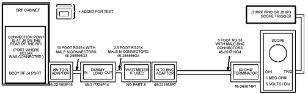
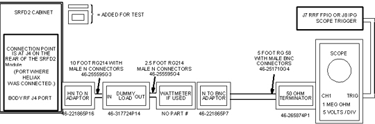
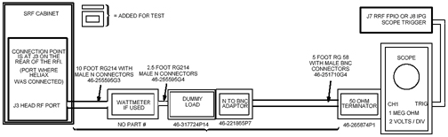
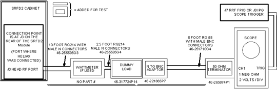

Operating Documentation
Direction 5500113, Rev# 3
Discovery MR450 1.5T Service Methods
Module Version 1.0, Version Date 5/15/07
Operating Documentation |
| Last Update | 09/22/2005 |
Use this section if the RF Power Measurement Kit is NOT going to be used. This section contains the setup information and protocols necessary to measure the body and head RF output power using either a wattmeter or oscilloscope. If the wattmeter is not used it is strongly recommended that an oscilloscope with a bandwidth of 300 MHz or greater be used for making the RF output power measurements. A 100 MHz oscilloscope can be used to make these measurements provided that the oscilloscope input channel to be used has been properly characterized and the resulting correction factor is known. The oscilloscope must be characterized and the correction factor must be known to account for measurement error at 63.86 MHz error due to bandwidth limitations of the 100 MHz oscilloscope.
Table 1: EQUIPMENT REQUIRED IF NOT USING THE RF POWER MEASUREMENT KIT
| Item | Description | Part Number |
| 1. | RF Test Cable Kit | 46-255816G1 |
| 2. | 100 MHz Scope (equivalent or greater) | 46-183029P61 |
| 3. | Digital Multimeter | 46-194427P49 |
| 4. | 50 ohm, 200 Watt, 30 dB Attenuator (dummy load) | 46-317724P14 |
| 5. | Screwdriver, slotted ( long & narrow) | - |
| 6. | Wattmeter Kit (optional) | 46# not supplied |
| 7. | DMM Test Cable - BNC to Banana (optional) | 2239139 |
Illustration 1: ALTERNATE SRF BODY EQUIPMENT SETUP FOR WATTMETER OR SCOPE MEASUREMENT

Illustration 2: ALTERNATE SRFD2 BODY EQUIPMENT SETUP FOR WATTMETER OR SCOPE MEASUREMENT

| NOTE: | If the wattmeter is not available then bypass it's connection in the circuit using an N-female to N-female connector 46-265875P2. |
Table 2: NON-SERVICE BODY PROTOCOL
| PATIENT REGISTER . [New Pt] PATIENT INFORMATION Patient Id geservice Patient Name body rf Weight (Lb) 300 IMPORTANT PATIENT PROTOCOLS [Patient Position] PATIENT POSITION Patient Position [>][Supine] Patient Entry [>][Head First] Coil [...][Body][Accept] IMAGING PARAMETERS Plane [>][Axial] Mode [>][2D] Pulse Seq [...][Spin Echo] [Accept] Imaging Options none (default) Psd Name cal Protocol no entry SCAN TIMING # of Echoes 1 (default) TE 25 TR 55 | SCANNING RANGE FOV 24 Slice Thickness 5 Spacing 0 Start 0 End 0 # Slices 1 (default) L/R Center 0 (default) P/A Center 0 (default) Table Delta 0.00 (default) ACQUISITION TIMING Freq 256 Phase 128 NEX 2 Freq Dir [>][A/P] (lowest window) [Save Series] [Research Operations][Display CVs] calmode 5 [Accept] [Research Operations][Setup Params] Set TG 50[Done] [Research Operations][Download] |
Illustration 3: ALTERNATE SRF HEAD EQUIPMENT SETUP

Illustration 4: ALTERNATE SRFD2 HEAD EQUIPMENT SETUP

| NOTE: | If the wattmeter is not available then bypass it's connection in the circuit using an N-female to N-female connector 46-265875P2. |
Table 3: NON- SERVICE HEAD PROTOCOL
| RX Manager. [New Series] PATIENT PROTOCOLS [Patient Position] PATIENT POSITION Patient Position [>][Supine] Patient Entry [>][Head First] Coil [...][Head][Accept] IMAGING PARAMETERS Plane [>][Axial] Mode [>][2D] Pulse Seq [...][Spin Echo] [Accept] Imaging Options none (default) Psd Name cal Protocol no entry SCAN TIMING # of Echoes 1 (default) TE 25 TR 55 | SCANNING RANGE FOV 24 Slice Thickness 5 Spacing 0 Start 0 End 0 # Slices 1 (default) L/R Center 0 (default) P/A Center 0 (default) Table Delta 0.00 (default) ACQUISITION TIMING Freq 256 Phase 128 NEX 2 Freq Dir [>][A/P] (lowest window) [Save Series] [Research Operations][Display CVs] calmode 5 [Accept] [Research Operations][Setup Params] Set TG 50[Done] [Research Operations][Download] From RX Manager Window [Download] |